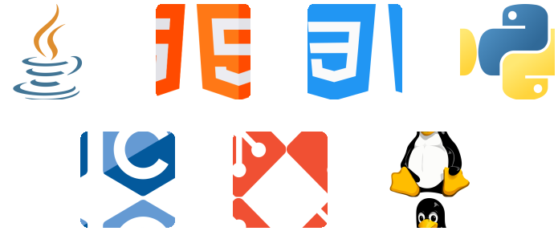
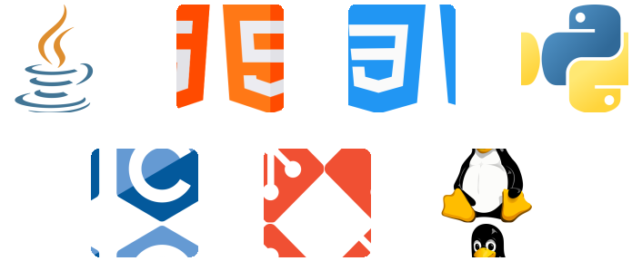
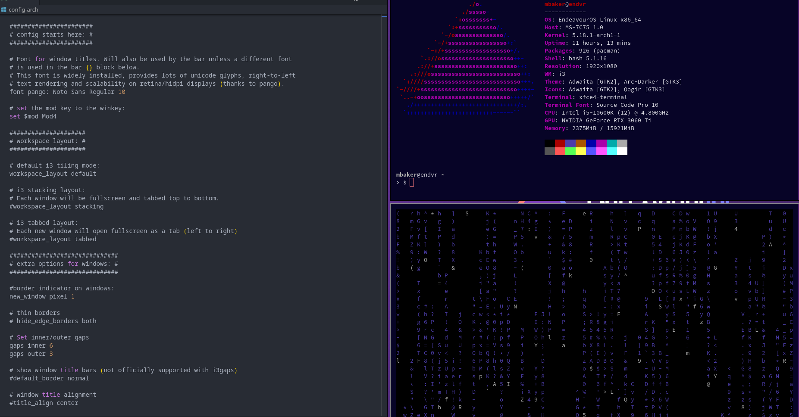

{% endblock %}
{% block skills %}

{% endblock %}
{% block first %}
{% endblock %}
{% block skills %}

{% endblock %}
{% block first %}
Built a bowling alley reservation system designed to take the stress out of planning a bowling session, using the Calendly API and MongoDB.
See Code {% endblock %} {% block second %} Dotfiles contains shell scripts for frequently used terminal operations, and custom configurations for applications within Linux.
See Code {% endblock %} {% block experiences %}Production Engineering Fellow
MLH Fellowship Powered by Meta
IT Support Specialist
Boston University